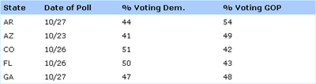

I recently spent a bit of time on the OneHundredPushups website, and the aspect of the site that most caught my eye (aside from ninja-girl on the front page) was the zebra-striped tables strewn throughout. (For those not in the know, zebra striping tables refers to alternating colored backgrounds on table rows, a la iTunes.) Studies have shown that there is (or at least can be) a slight performance increase associated with zebra striped tables (or at least there isn’t a decrease), and that most users prefer zebra striping to traditional lined tables.
I thought the tables on OneHundredPushups were fairly well done (take a look for yourself here), but a glance at the code showed me that the developer had put more work than was necessary into creating his stripes. Here, I’ll show you an easy way to create a table like the one in the image above (or on the example page here) that doesn’t require you to mess with your XHTML — in fact, you could easily apply this to tables already on your website!
Of course, before we can dive into the CSS, we’ll need a table to style. Mine looks something like this:
<table cellpadding="0" cellspacing="0">
<tr>
<th>State</th>
<th>Date of Poll</th>
<th>% Voting Dem.</th>
<th>% Voting GOP</th>
</tr>
<tr>
<td>AR</td>
<td>10/27</td>
<td>44</td>
<td>54</td>
</tr>
<tr>
<td>AZ</td>
<td>10/23</td>
<td>41</td>
<td>49</td>
</tr>
... and so on ...
</table>
As you can see, it’s nothing out of the ordinary. I’ve used the old-school cellspacing and cellpadding attributes just to ensure consistent treatment across browsers. And otherwise, I’m using a <th> tag or four to distinguish my table headers from the rest of my code. Otherwise, we’ve just got rows and cells galore. You’ll notice there’s not a single class or ID present here (although if I only wanted to style some of the tables on my site, I’d probably give the styled ones a specific class name).
Next, let’s take a look at the basic CSS styles I’m using:
table {
width: 100%;
border: 1px solid #cef;
text-align: left; }
th {
font-weight: bold;
background-color: #acf;
border-bottom: 1px solid #cef; }
td,th {
padding: 4px 5px; }
I’ve set the table width to 100% to stop it from collapsing to its minimum size (the default behavior), then given it a pale blue border around the outside. I’ve also set the text alignment throughout the table to “left” — this is to prevent my table headers from centering themselves, which is the default. I prefer my headers to be aligned with my content, but your mileage may vary.
When it comes to the headers, I’ve done a little styling: I’ve given them a background color (a bit darker than my border), bolded the text, and given the bottom of the headings a border what matches the border around my entire table.
Finally, I’m just adding a bit of padding to the interiors of the table cells, to give them a little breathing room. Personally, I think an appropriate use of white (or at least negative) space can be just as critical to legibility as zebra striping — perhaps someone out there more statistically inclined than me should look into that!
Those styles give us our basic table layout, which looks something like this:

So how do we get the alternating rows? For that, I’m creating a new class in my CSS, specifically for the odd (that is, not-even) rows of the table:
.odd {
background-color: #def; }
.odd td {
border-bottom: 1px solid #cef; }
This class, once applied to alternating rows of my table, would cause every other row to gain a pale blue background color and a slightly darker bottom border. Since this A List Apart study by Jessica Enders suggested that alternating colored rows and underlines were two of the most aesthetically appealing ways to present tabular data, I figured… why not use both?
Now if I wanted, all I would need to do is go back through my HTML and apply this class to alternating rows in my tables, like the folks at OneHundredPushups have done. However, you’ll notice that my code above doesn’t have any CSS classes. That’s because I prefer to work smarter whenever I have the chance. Instead of turning back to my HTML, I’m going to look to JavaScript (specifically, jQuery) to do my heavy lifting for me.
To apply our class automatically, all the jQuery I need is this:
$(document).ready(function(){
$("tr:odd").addClass("odd");
});
In layman’s terms, this tiny snippet is saying, “once the document is done loading, cycle through the page, find every ‘odd’ table row, and give it a class of ‘odd.’” Then our CSS takes over and does the rest. Oh, and for the record, you could also write a second rule like this:
$("tr:even").addClass("even");
Which would do the exact same thing as above, only apply it to the “even” rows of the table. And just so you’re not caught off guard by this script’s behavior, it’s good to know in advance that the :odd and :even pseudo-classes start counting at zero, not one. So the first row of your table is, according to jQuery, the “0th” row, and is therefore even.
And there you have it! You can see the whole thing in action here. And now, go forth and make the web a more beautiful (or at least stripy-er) place.
I knew I recognized that table from somewhere! Looks like the developer of OneHundredPushups.com took some serious “inspiration” (ahem) from Veerle.
In any case, I really like that jquery addition, Rob. I’m going to give this a try on a project of my own.
Nice catch, Scott! That’s pretty entertaining. I hadn’t read that article on Veerle. Though I have to say, if you’re going to “borrow” from someone, you could do worse than to start with her stuff. :)
Thanks, Rob — this is great. I had to research this topic awhile back, to have alternating background colors on a table for a client, and most of the info I found involved assigning classes, as you found. I used a similar method, as you described, and it made any updates to the table a pain free task! It really is much less work to do it the right way, especially in the long run. :-)
Pingback: rascunho » Blog Archive » links for 2008-11-05
Pingback: Creare tabelle a righe alternate con i CSS e jQuery — Studio404 Web Agency
IOW, nothing interesting and misleading title — should be “CSS and JavaScript”. Now, really doing this CSS (only) would be interesting.
Technically, you can do it with just CSS… it’d just take either:
1. Adding classes manually, which I mention in the article, which makes my title accurate… but is labor intensive, or
2. Writing extremely detailed rules. For example, you could technically write rules that say:
tr, tr + tr + tr, tr + tr + tr + tr + tr { whatever; }
That would style the 1st, 3rd, and 5th rows. And then you could just write a counter-rule for the 2nd, 4th, 6th… and so on, for as long as your tables might conceivably get. But I think JavaScript is probably the easier route to go. :)
You know, anonymouxxx… the day you actually leave a positive comment, I think I’m going to have to print it off and hang it on my fridge. ;)
Pingback: Tabelle a colori alternati con i CSS : cssblog.it
Pingback: CSS e JQuery: creare una tabella con righe di colori alternati | Simone D'Amico
Pingback: Zebra Striped Tables With CSS « Sharebrain
Nice post. Thanks.
This was so much easier than I thought it would be – my first use of jquery. Thanks for the post!
Can you add a webkit border radius on the first table row? When I try it, the row still has square corners. If I add a float:left, the corners are rounded but the cell collapse into a single cell.
test, how does this work
sorry if this automatically updates to your site. i am wondering how this works without being spammed to death – i see no capcha thing.
Hi Stuart,
Entertaining. :) I’m running a spam catcher on the admin side of things which catches 99% of the spam that comes through this site. The other 1% I delete manually every couple of days. Yours doesn’t count as spam, though, so it stays.
Accidentally found my way into my first use of jQuery. Pretty cool!
Pingback: Zebra-striping in PHP for Drupal or WordPress CMS | Likemind Web Services
Out of 14 different places I visited to get this right, I finally figured out why with this tutorial. I guess I was probably doing it right all along EXCEPT FOR I WAS USING ONE quotation instead of the double (to keep my code all the same).
Thanks for the help!
Is there a way to restrict this working on one table and not another on the same page?
Hey Robert,
To get this to work on one table (or one set of tables) and not others, just give that table a class (“striped”, for example), then change your jQuery to read like this instead:
$(document).ready(function(){ $(".striped tr:odd").addClass("odd"); });I’m trying to see how much zebra striping vs row hight lighting in large tables, (Enders looked only at smaller tables) and have a on-line survey you can participate in if you are interested: http://access2learn.com/survey1/
When I developed the table, I used the same method you show here for applying the zebra stripe, but had to use a little more complicated jQuery for highlighting. If you look at the source code of the external javascript, you can see what I did.
This is pure CSS:
.striped tr:nth-of-type(2n+0)
{
background-color: #def;
}
(Add salt and pepper to taste)
Though for IE < 9 and FF < 3.5 you'll need the js solution still!
Amazing post, honest!
http://cica.ro/p/t9Iw4Rg
This article is misleading, it should be named “Styling Zebra Striped Tables with jQuery”
the reason I say that is because at no time do you use CSS to control the zebra stripes.
I would have thought a developer would understand the difference. HERE is how to do it using CSS ONLY!!
tr:nth-child(even){ background-color: #FFFFFF; }
tr:nth-child(odd){ background-color: #CCFFFF; }
This will require a modern browser, but if you’re handicapped with IE, you can use ie9.js from here: http://code.google.com/p/ie7-js/source/browse/trunk/lib/IE9.js?r=35
to make IE work correctly and this also fixes up a lot of crap you normally have to deal with.
Wow, this surely has made my life easier! Thanks alot!
Hello,
Please if somebody can help me with my problem. I want to make zerba stile on my page: http://rollisbusiness.ro/model/?cat=4
My table for the moment it’s like that:
<a href="”>
Where i must to change the css style?
I realy don’t know very wel to make this modification.
any litle help will be very good for me.
Very brilliant
thank you! That was so simple and useful.
Pingback: Simple Table Column Highlighting